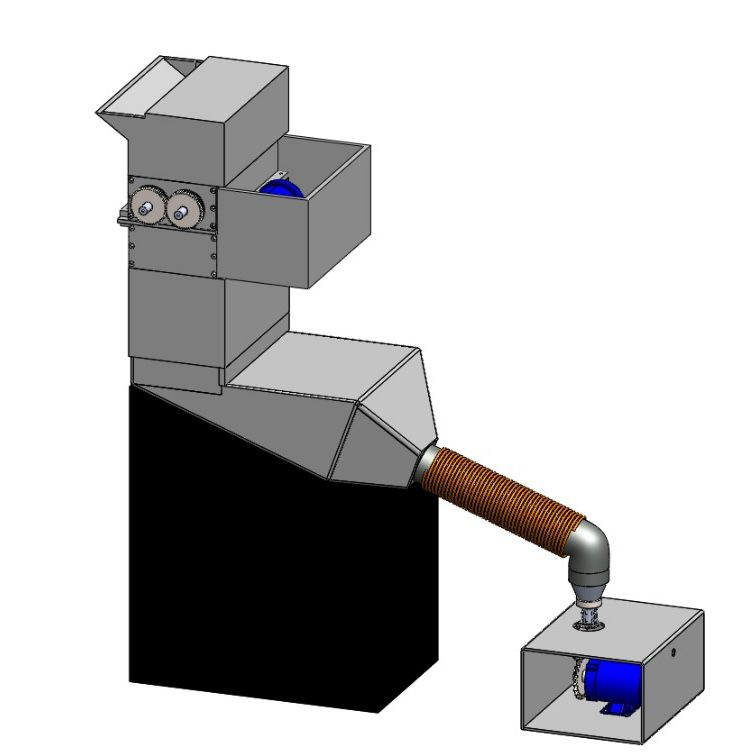

Our Bottle To Yarn Converter machine transforms plastic bottles into high-quality yarn, providing an eco-friendly and efficient recycling solution.

🚀 How It Works
🔹 Crushing & Shredding: Plastic bottles are broken into small pieces.
🔹 Heating & Liquefying: Shredded plastic is melted for yarn extraction.
🔹 Yarn Formation: The molten plastic is spun into fibers using a cotton candy mechanism.
💡 Key Features
✅ Safety First:
🔒 Blade Protection: Prevents accidental contact with cutting components.
🛑 Emergency Stop Button: Instantly halts the machine for safety.
🌡 Automatic Overheat Shut-Off: Prevents damage and ensures safe operation.
✅ Special Features:
🏗 Filter Net: Removes impurities for high-quality yarn.
📏 Compact Design: Space-saving and easy to integrate.
🌍 A Step Towards a Greener Future
By converting plastic waste into valuable yarn, our machine supports sustainability, circular economy practices, and eco-friendly textile manufacturing. Be a part of this revolution!